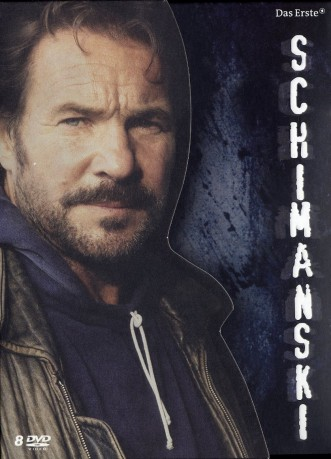

")
 
 IMDB-Wertung: 7.2 / 10
IMDB-Wertung: 7.2 / 10  Metascore:
Metascore: 
A German TV series about Horst Schimanski, a spin-off from the popular TV crime series Tatort.
Jahr: 1997
Dauer: undefiniert Minuten
FSK:
Land: Deutschland Studio: Colonia MediaTonspuren:
Untertitel:
Auflösung: SD (640x352) Größe: 699 MB
Regisseur: Hajo Gies, Mark Schlichter, Andreas Kleinert, Edward Berger, Thomas Jauch
Drehbuch: Lars Böhme, Uwe Erichsen, Torsten C. Fischer, Mario Giordano, Hartmut Grund
Soundtrack:
Darsteller:
 Götz George als Horst Schimanski, 17 episodes, 1997-2013
Götz George als Horst Schimanski, 17 episodes, 1997-2013 Steffen Wink als Tobias Schrader, 5 episodes, 1997-1998
Steffen Wink als Tobias Schrader, 5 episodes, 1997-1998 Johan Leysen als Daniel Laroc, 2 episodes, 1998-2001
Johan Leysen als Daniel Laroc, 2 episodes, 1998-2001 Traute Hoess als Frau Fränckel, 2 episodes, 2001-2004
Traute Hoess als Frau Fränckel, 2 episodes, 2001-2004 Sylvester Groth als Christian Wörner, 1 episode, 1998
Sylvester Groth als Christian Wörner, 1 episode, 1998 Katrin Saß als Elke Dorn, 1 episode, 2000
Katrin Saß als Elke Dorn, 1 episode, 2000 Sebastian Urzendowsky als Attila, 1 episode, 2002
Sebastian Urzendowsky als Attila, 1 episode, 2002 Martin Feifel als Steffen König, 1 episode, 2004
Martin Feifel als Steffen König, 1 episode, 2004 Susanne Bormann als Maya, 1 episode, 2000
Susanne Bormann als Maya, 1 episode, 2000 Matthias Brandt als Martin Krawe, 1 episode, 2007
Matthias Brandt als Martin Krawe, 1 episode, 2007 Johann von Bülow als Max von Rüden, 1 episode, 2011
Johann von Bülow als Max von Rüden, 1 episode, 2011 Harald Schrott als Sinna, 1 episode, 2001
Harald Schrott als Sinna, 1 episode, 2001 Ronald Zehrfeld als Maik 'Ringo' Lohse, 1 episode, 2007
Ronald Zehrfeld als Maik 'Ringo' Lohse, 1 episode, 2007 Dirk Martens als Ziegenbart, 1 episode, 1997
Dirk Martens als Ziegenbart, 1 episode, 1997 Katharina Schüttler als Alice Keller, 1 episode, 2007
Katharina Schüttler als Alice Keller, 1 episode, 2007 Samuel Finzi als , 1 episode, 2002
Samuel Finzi als , 1 episode, 2002 Robert Stadlober als Rumpelstilzchen, 1 episode, 1998
Robert Stadlober als Rumpelstilzchen, 1 episode, 1998 Misel Maticevic als Axel, 1 episode, 2000
Misel Maticevic als Axel, 1 episode, 2000 Jan Pohl als Oliver Hoppe, 1 episode, 2011
Jan Pohl als Oliver Hoppe, 1 episode, 2011Datei: X:\HD-Serien\Tatort - Schimanski\01 Schimanski - Die Schwadron (1997).avi seit 06.07.2019
Festplatte: HD Serien(SU-Z)+Dokus+Musik
 Es gibt insgesamt 182 Filme in der Gruppe 'HD-Serien'
Es gibt insgesamt 182 Filme in der Gruppe 'HD-Serien'